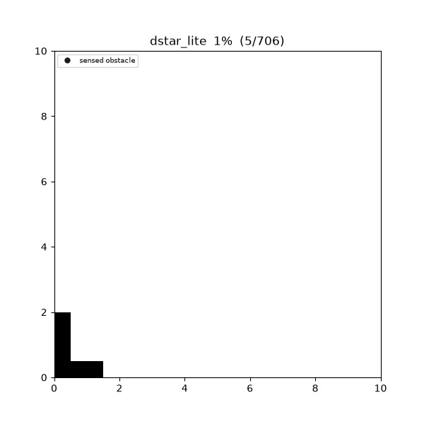
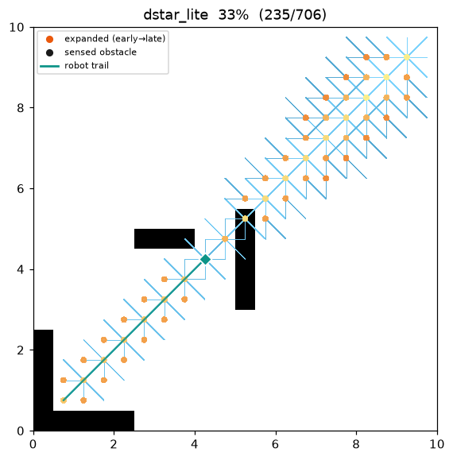
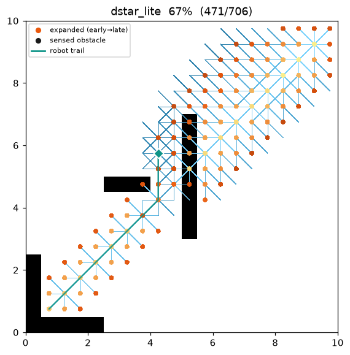
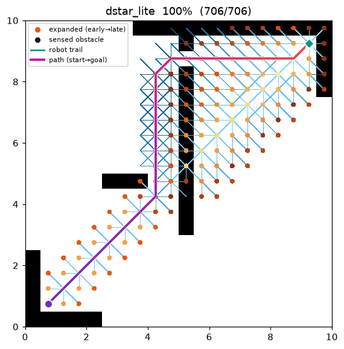
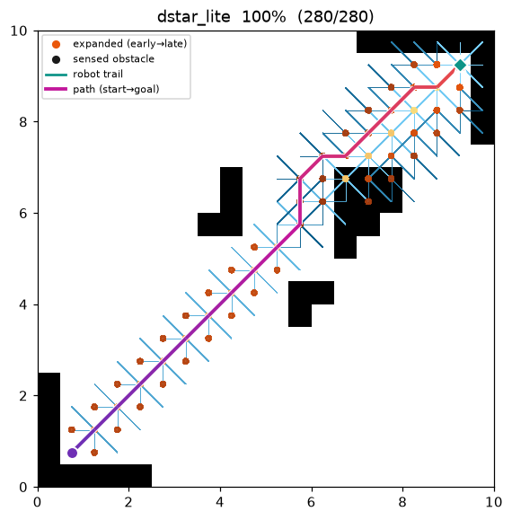
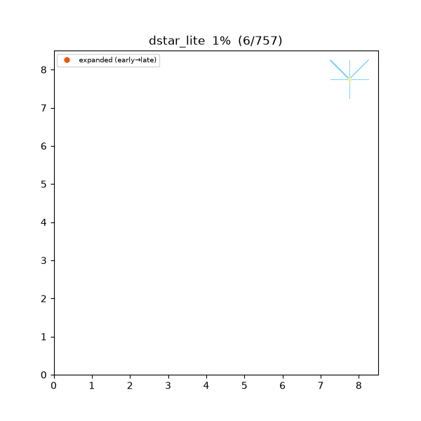
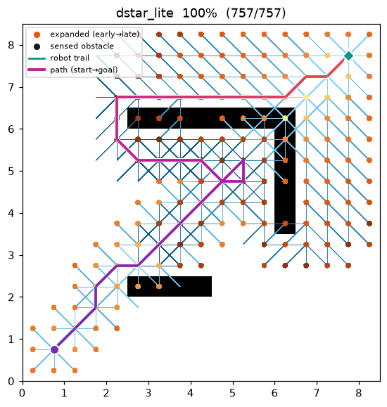
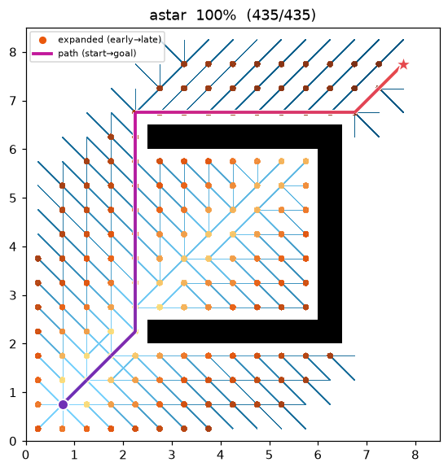

D* Lite (dynamic replanning)¶
| Item | Description |
|---|---|
| Category | incremental / dynamic replanning graph search |
| Required capability | DynamicGridSpace (passable_neighbors + is_blocked) |
| Completeness | complete (finite grids, non-negative costs) |
| Optimality | optimal for the current belief — every step follows the shortest path over the known map |
| Complexity | first search is A* level; each replan repairs only the neighbourhood of a change (far cheaper than a from-scratch search) |
| Original paper | Koenig & Likhachev (2002) 1 · built on LPA*: Koenig, Likhachev & Furcy (2004) 2 |
Background¶
A*3 assumes the map is fully known in advance. A real robot, however, starts with no map, sees only its surroundings through a sensor, and must re-plan when it meets an unexpected obstacle. Re-running A* from scratch every step (naïve replanning) repeats almost all of the work.
D* Lite1 solves this with incremental search. It maintains a backward search rooted
at the goal and keeps two values per cell: g (the cost-to-goal computed so far) and rhs (a one-step
look-ahead value). Only vertices where the two disagree are "inconsistent" and go on a priority queue.
When the sensor finds a cell that contradicts the belief, only a few vertices around that cell are
re-queued and the previous search is repaired — not restarted.
Here the belief is planner-internal state: the blocked set starts empty, so every in-bounds cell is
assumed free (the freespace assumption). plan() simulates the whole move → sense → repair loop
internally until the goal is reached or proven unreachable, and returns the executed trajectory (not
a from-start plan).
How It Works¶
maze01. The robot (teal diamond) starts assuming an empty map and re-plans by local repair as it
discovers the walls one by one (fogged in as black cells). On this instance the discovered walls never
push it off the optimal path, so the realized trajectory equals the (omniscient) A* optimum exactly.

Intermediate search / motion progress (left → right: early / middle / final trajectory):
 |
 |
 |
Final result on open01:

Because the search is backward, the heuristic is h(s_start, s) — from a search vertex s to the
current robot position s_start. As the robot moves, this reference point shifts, so an offset k_m
is accumulated to keep the keys already on the queue monotone (this is what lets the queue be reused
instead of rebuilt).
CalcKey(s): # priority = [k1, k2] (lexicographic)
k2 ← min(g(s), rhs(s))
return [k2 + h(s_start, s) + k_m, k2]
Initialize():
U ← ∅; k_m ← 0
for all s: rhs(s) = g(s) = ∞
rhs(s_goal) ← 0 # goal is the root of the backward search
U.insert(s_goal, CalcKey(s_goal))
UpdateVertex(u):
if u ≠ s_goal:
rhs(u) ← min over s' ∈ Succ(u) of ( c(u, s') + g(s') )
remove u from U
if g(u) ≠ rhs(u): U.insert(u, CalcKey(u)) # only inconsistent vertices sit on U
ComputeShortestPath():
while U.top_key() < CalcKey(s_start) or rhs(s_start) ≠ g(s_start):
(k_old, u) ← U.pop_min()
if k_old < CalcKey(u): U.insert(u, CalcKey(u)) # stale key: refresh
else if g(u) > rhs(u): g(u) ← rhs(u) # over-consistent: relax
for s ∈ Pred(u): UpdateVertex(s)
else: g(u) ← ∞ # under-consistent: raise
for s ∈ Pred(u) ∪ {u}: UpdateVertex(s)
Main():
s_last ← s_start; Initialize(); sense(s_start); ComputeShortestPath()
while s_start ≠ s_goal:
if g(s_start) = ∞: return "no path"
s_start ← argmin over s' ∈ Succ(s_start) of ( c(s_start, s') + g(s') ) # take one step
changed ← sense(s_start) # scan the sensor disk, update the belief
if changed ≠ ∅:
k_m ← k_m + h(s_last, s_start); s_last ← s_start
for c ∈ changed: UpdateVertex the vertices around it
ComputeShortestPath() # local incremental repair
Grid motion is symmetric (undirected), so Succ = Pred = passable_neighbors (the belief-passable
neighbours). Each step the robot moves to the neighbour with the smallest g — i.e. it follows the
shortest path over the map it currently knows.
Sensing and belief — owned by the capability¶
Every step the robot queries real occupancy (is_blocked) for the cells inside a Euclidean disk of
radius sensor_radius (cells) around itself (dr² + dc² ≤ r²). A blocked cell not yet in the belief is
added, an obstacle_revealed event is emitted, and only the neighbour vertices that used to route into
that cell are repaired with UpdateVertex. The grid geometry (move table + corner-cut rule) is owned
by the map's passable_neighbors, not the algorithm, so D* Lite never touches raw coordinates.
Heuristic — octile (backward, toward the robot)¶
h(a, b) is the octile distance, admissible for 8-connected motion:
h(a, b) = (hi − lo) + √2 · lo, hi = max(|Δrow|, |Δcol|), lo = min(|Δrow|, |Δcol|)
It is computed in exactly the same operation order as the map's A* heuristic, so the C++ and Python keys match bit-for-bit.
Measurements (Python, sensor_radius = 3, trace on · A* comparison on the same instance):
| map | D* Lite realized cost | A* cost | D* Lite cumulative expanded | A* expanded | replans | obstacles found |
|---|---|---|---|---|---|---|
| maze01 | 28.728 | 28.728 | 247 | 108 | 20 | 41 |
| open01 | 25.213 | 25.213 | 69 | 71 | 11 | 35 |
The realized cost equals A*'s (the discovered obstacles never blocked the optimal path), but the cumulative expanded count is larger — the price of catching up to an unknown map by incremental repair. Unlike A*, which is handed the whole true map, D* Lite earns that knowledge as it moves.
Reproduce:
python python/demos/demo_dstar_lite.py \
--map maps/grid/maze01.yaml --scenario maps/scenarios/maze01_s1.yaml \
--params configs/global_planning/dstar_lite.yaml --trace out/dstar_lite.jsonl
python tools/viz/replay.py out/dstar_lite.jsonl --gif out/dstar_lite.gif --snapshots out/dstar_snaps/
Properties¶
- Completeness: complete on a finite grid with non-negative costs. If a path exists in the true map
the robot reaches the goal; otherwise it reports unreachability via
g(s_start) = ∞. - Optimality: each move is optimal for the belief at that instant. Detouring around a first-seen obstacle can make the executed trajectory longer than the (omniscient) A* optimum — hence the realized cost ≥ the A* cost on the same instance. When the belief matches the true map closely enough, the two coincide (the maze01 / open01 demos below are such cases).
- Incrementality: it reuses LPA*'s2 g/rhs values and inconsistency queue, and the
k_moffset lets the previous search survive robot motion. Each replan repairs only the neighbourhood of a change, which is cheaper than a naïve full replan.
Correctness: Local Consistency and the \(k_m\) Offset¶
Local consistency. Each vertex carries a computed value \(g(s)\) and a one-step look-ahead value
A vertex with \(g(s)=rhs(s)\) is locally consistent.
Theorem (globally consistent \(\Rightarrow\) shortest distances). If every vertex is locally consistent then \(g(s)=g^\ast(s)\) — the true shortest cost from \(s\) to \(s_\text{goal}\) in the belief graph.
Proof sketch. If \(g(s)=\min_{s'}(c(s,s')+g(s'))\) at every vertex with \(g(s_\text{goal})=0\), this is exactly the Bellman optimality equation for shortest paths with its boundary condition. With non-negative costs its fixed point is unique, so \(g\equiv g^\ast\). ∎
Making every vertex consistent costs one full Dijkstra. D* Lite's saving is that it need not: the
robot only uses the \(g\) of vertices on the shortest path to \(s_\text{start}\), so it processes only
until that path is settled. ComputeShortestPath's termination —
\(U.\text{top\_key}\ge\text{CalcKey}(s_\text{start})\) with \(rhs(s_\text{start})=g(s_\text{start})\) —
is exactly that minimal stopping point, the same pruning as A* halting once it pops the goal.
Over/under-consistent processing. A vertex \(u\) popped from the queue is inconsistent in one of two ways only.
- over-consistent \(g(u)>rhs(u)\): the look-ahead is better → lowering \(g(u)\leftarrow rhs(u)\) makes \(u\) consistent, and the improvement is propagated to its predecessors \(\text{Pred}(u)\) (ordinary relaxation, cost going down).
- under-consistent \(g(u)<rhs(u)\): a blocked edge (etc.) makes the old \(g\) an underestimate → it is invalidated with \(g(u)\leftarrow\infty\) and \(u\cup\text{Pred}(u)\) are re-evaluated, dropping back to over-consistent on a later pop if needed.
The under-consistent branch is precisely what absorbs dynamic changes where cost increases as obstacles appear — the half that static Dijkstra/LPA* lack.
The \(k_m\) offset — why it is needed. Because the search runs backward, the heuristic is \(h(s_\text{start},s)\) from a vertex \(s\) to the robot position \(s_\text{start}\). When the robot moves, that reference point changes and keys already in the queue risk becoming invalid. As a metric, the octile heuristic satisfies the triangle inequality
i.e. one robot step \(s_\text{old}\to s_\text{new}\) can make any vertex's key look smaller by at most \(h(s_\text{old},s_\text{new})\). Accumulating exactly that amount into every subsequently computed key (\(k_m\mathrel{+}=h(s_\text{old},s_\text{new})\)) compensates the comparison between old and new keys, so the monotone lower-bound property of the priority order is preserved without recomputing or resorting the whole queue. This single \(k_m\) device is what turns LPA*2 into an incremental search for a moving robot. ∎
Counterexample: the freespace-assumption trap¶
D* Lite is optimal for the current belief every step, but detouring around a first-seen obstacle
can make the executed trajectory longer than omniscient A* (the "realized cost ≥ A* cost" property).
dstar_trap01 is a C-shaped trap whose mouth faces the robot: assuming an empty map, the robot
believes the inside is the shortest way and drives straight into the mouth, then senses the back wall
from within, backs out, and goes around.
| D* Lite (executed trajectory) | omniscient A* | |
|---|---|---|
| cost | 34.971 | 25.071 |
| expanded (cumulative) | 284 (9 replans) | 160 |

| D* Lite executed — includes entering & backing out | omniscient A* optimum |
|---|---|
 |
 |
Omniscient A* avoids the trap entirely and rounds it from above, but D* Lite has to earn its knowledge by moving, so it only learns of the back wall after stepping into the trap once — a realized cost about 40 % higher (\(34.971/25.071\approx1.39\)). This is not a defect but the essence of replanning in an unknown environment: every single decision was belief-optimal.
python python/demos/demo_dstar_lite.py --map maps/grid/dstar_trap01.yaml \
--scenario maps/scenarios/dstar_trap01_s1.yaml \
--params configs/global_planning/dstar_lite.yaml --trace out/dstar_ce.jsonl
Parameters¶
| Name | Type | Default | Range | Description |
|---|---|---|---|---|
sensor_radius |
int | 3 | [1, 50] | Sensor radius (cells). Each step senses cells with dr² + dc² ≤ r². A larger radius spots obstacles from further away, so fewer replans are needed |
Emitted Trace Events¶
planning_started → ( node_expanded, candidate_evaluated, edge_added, robot_moved, obstacle_revealed )* → path_found → planning_finished
robot_moved(state = the robot's new executed cell) — emits the trajectory one step at a time.obstacle_revealed(state = a newly sensed blocked cell) — the moment the sensor finds an obstacle not yet in the belief.
When these two events are present, replay.py paints the background all-free (the belief), fogs the
discovered obstacles in as black cells as the search progresses, and draws the robot's trail. Renders for
existing planners (no such events) are unchanged.
planning_finished.metrics: path_cost (realized trajectory cost) · expanded_nodes (cumulative) ·
replan_count · sensed_cells (obstacle cells discovered) · runtime_sec. The common metric schema is
reused unchanged.
References¶
-
Koenig, S., & Likhachev, M. (2002). "D* Lite." Proc. AAAI Conference on Artificial Intelligence, 476–483. PDF ↩↩
-
Koenig, S., Likhachev, M., & Furcy, D. (2004). "Lifelong Planning A*." Artificial Intelligence, 155(1–2), 93–146. doi:10.1016/j.artint.2003.12.001 ↩↩↩
-
Hart, P. E., Nilsson, N. J., & Raphael, B. (1968). "A Formal Basis for the Heuristic Determination of Minimum Cost Paths." IEEE Transactions on Systems Science and Cybernetics, 4(2), 100–107. doi:10.1109/TSSC.1968.300136 ↩